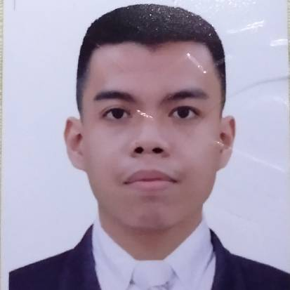

CHARLES KENNETH TULAGAN
My name is Charles Kenneth E. Tulagan, I live at #16 Easy Service Road Bunyi Compound
Cupang Muntinlupa City. My birthday is on August 24, 2002, My mother's name is
Stella Maris Tulagan and she is a house wife and my father's name is
Marlon Tulagan and he is a security guard in Taguig my younger brother is 6 years old
and he is an elementary student in AES, and I am a BSCS student in PLMUN,
I am expecting in this subject is more knowledge in the modern world using gadgets.
and other technologies and lastly 5 years from now I will be in a happy and successful life.